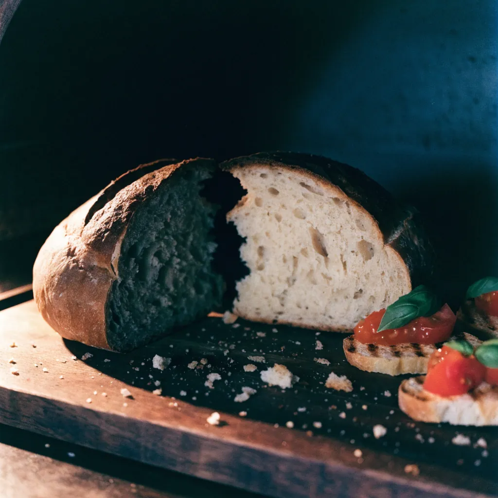
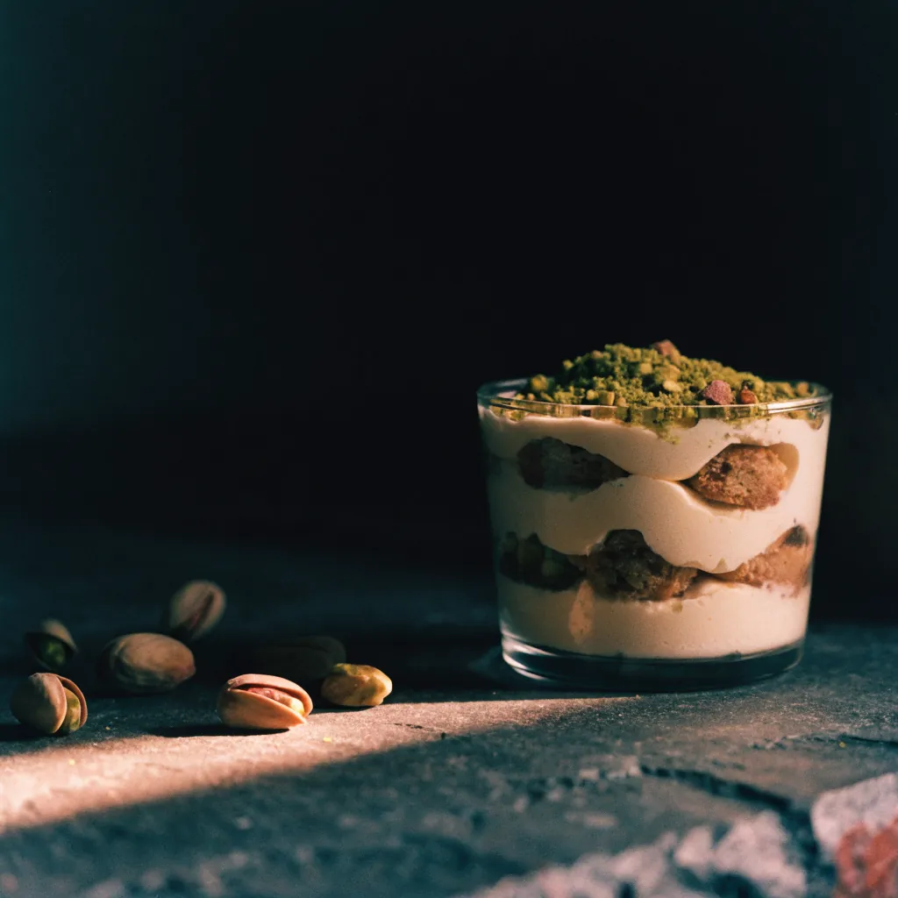
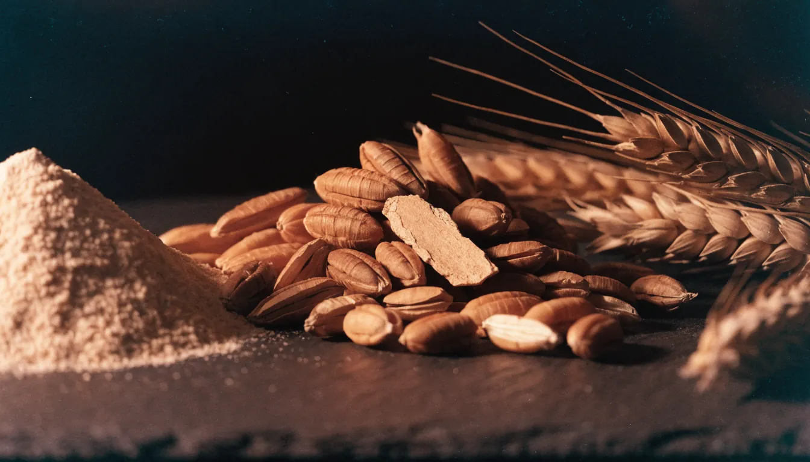

Pizza
Neapolitanischer Art: dünne Mitte, hoher, luftiger Rand. Klassisch mit Tomate und Fior di Latte – oder als Speciale, etwa die Favola mit Mortadella und Pistazien, mit Oktopus und Kapern oder mit Thunfisch, roten Zwiebeln und Oliven.
Täglich ab 12 Uhr geöffnet
Pizza und Pane aus einem Teig – Fuhlsbüttler Straße 300 in Barmbek, täglich ab 12 Uhr.
Pizza classica und Speciale, dazu Crostoni, Friselle, Fritti und Dolci. Vor Ort, draußen, zum Abholen oder geliefert.

Neapolitanischer Art: dünne Mitte, hoher, luftiger Rand. Klassisch mit Tomate und Fior di Latte – oder als Speciale, etwa die Favola mit Mortadella und Pistazien, mit Oktopus und Kapern oder mit Thunfisch, roten Zwiebeln und Oliven.
Das zweite Schild über der Tür heißt pane. Daraus werden Crostoni und Bruschetta, Friselle und der Panuozzo Caprese. Aus der Fritteuse kommen Pizzette und Arancini – gut zum Teilen, bevor die Pizza kommt.

So liegt sie bei uns auf dem Tisch: als Papier-Set, sortiert wie das Schaufenster.



Komplette Karte mit Preisen im Lokal und am Telefon.
Jetzt vorbestellen
Spezza il grano – das Korn brechen. Bei uns wird daraus Pizza und Brot.

Klinkerbau, zwei schwarze Schilder über den Türen: links pane, rechts SPEZZAGRANO.
Route planen
Auch zum Mitnehmen – kurz anrufen, abholen. Wir sagen dir, wann sie aus dem Ofen ist.
040 530 09 595 anrufen